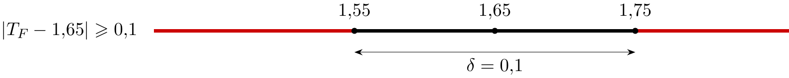
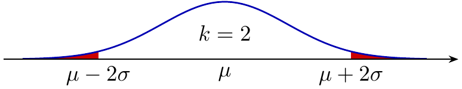

Chapitre 16 : Concentration et loi des grands nombres \large Terminale spécialité
Terminale spécialité · Chapitre 16 — Concentration et loi des grands nombres · cours de Frederik de Peyrelongue
I. Concentration
Inégalité de Bienaymé-Tchebychev
Soit $X$ une variable aléatoire d'espérance $\mu$ et de variance $V$.
La probabilité que $X$ se trouve en dehors de l'intervalle $\left[\mu-\delta\,;\mu+\delta\right]$ est inférieure à $\dfrac{V}{\delta^{2}}$.
Cette inégalité conduit à la loi des grands nombres.
La taille moyenne d'une femme française est de $1{,}65$ m et la variance est évaluée à $0{,}0025$. Majorer la proportion des femmes françaises dont la taille est inférieure ou égale à $1{,}55$ ou supérieure ou égale à $1{,}75$.
Soit $T_{F}$ la variable aléatoire associée à la taille d'une femme française. On a donc :

On a alors :
Il y a au plus un quart des femmes françaises dont la taille est inférieure ou égale à $1{,}55$ ou supérieure ou égale à $1{,}75$.
1.2 Application à un intervalle de rayon de $k$ fois l'écart-type
Soit $X$ une variable aléatoire d'espérance $\mu$ et d'écart-type $\sigma$.
On prend, avec $k\in\N^{*}$, $\delta=k\sigma$, d'où :
De l'inégalité de Bienaymé-Tchebychev :
- $k=2$ : $\prob{\left|X-\mu\right|\geqslant2\sigma}\leqslant0{,}25$. La probabilité que l'écart de $X$ à $\mu$ soit supérieur ou égal à $2\sigma$ est inférieure ou égale à $0{,}25$.
- $k=4$ : $\prob{\left|X-\mu\right|\geqslant4\sigma}\leqslant0{,}0625$. Obtenir un écart de $X$ à $\mu$ supérieur ou égal à $4\sigma$ est un événement improbable.

Sur une roue de loterie il y a $4$ secteurs rouges sur $10$. On fait tourner $20$ fois la roue en notant par $X$ le nombre de fois où la roue tombe sur un secteur rouge.
La variable aléatoire $X$ suit alors la loi binomiale $\mathcal{B}(20\,;0{,}4)$.
Majorer la probabilité que $X$ soit en dehors de l'intervalle centré en $\mu$ et de rayon $2\sigma$.
Correction.
On a alors :
$2\sigma\approx4{,}4$, à l'aide de la calculatrice, on trouve :
L'inégalité de Bienaymé-Tchebychev donne une majoration de $0{,}25$ qui est loin d'être optimale comme le calcul sur la calculatrice le montre.
II. Loi des grands nombres
Inégalité de concentration
Soit $\left(X_{1},X_{2},\dots,X_{n}\right)$ un échantillon de variables aléatoires d'espérance $\mu$ et de variance $V$, et $M_{n}$ la variable aléatoire moyenne de cet échantillon.
On rappelle que
D'après les relations sur l'espérance et la variance de la variable aléatoire d'un échantillon, on a :
D'après l'inégalité de Bienaymé-Tchebychev, on a :
Dans une société de démarchage par téléphone, on estime que $40\,\%$ des personnes appelées répondent effectivement.
On appelle $n$ personnes, la variable aléatoire $X_{k}$ donne $1$ si la $k$-ième personne appelée répond et $0$ sinon.
Les variables aléatoires $X_{1}$, $X_{2}$, …, $X_{n}$ sont indépendantes, identiques, de même loi d'espérance
et de variance
Alors, pour tout réel $\delta>0$,
Par exemple, pour $\delta=0{,}1$,
- Pour $n=1\,000$, $P\left(\left|M_{n}-0{,}4\right|\geqslant0{,}1\right)\leqslant0{,}024$.
On dit que l'on obtient pour $M_{n}$ une précision de $0{,}1$ avec un risque de $0{,}024$.
Lorsqu'on appelle $1\,000$ personnes, la probabilité que le nombre de personnes qui répondent soit en dehors de l'intervalle $\left]300\,;500\right[$ est inférieure à $0{,}024$.
2.2 Loi des grands nombres
Soit $\left(X_{1},X_{2},\dots,X_{n}\right)$ un échantillon de variables aléatoires d'espérance $\mu$ et $M_{n}$ la variable aléatoire moyenne de cet échantillon.
Pour un $\delta$ donné aussi petit soit-il, la limite de la probabilité que $M_{n}$ soit en dehors de l'intervalle $\left[\mu-\delta\,;\mu+\delta\right]$ est nul.
Ce théorème montre de façon rigoureuse que, lorsqu'on lance un grand nombre de fois une pièce de monnaie bien équilibrée, on a une chance sur deux en moyenne que la pièce tombe sur « pile » ou sur « face ».
Pour tout réel $t>0$ donné, l'inégalité de concentration permet d'écrire :
Or $\lim\limits_{n\to+\infty}\dfrac{V}{nt^{2}}=0$, donc d'après le théorème des gendarmes $\lim\limits_{n\to+\infty}P\left(\left|M_{n}-\mu\right|\geqslant t\right)=0$.